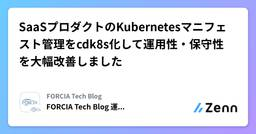

FORCIA Tech Blogのフィード
https://zenn.dev/p/forcia_tech
――「つなげれば、見える。」――膨大・複雑なデータから必要な情報を的確に探し出す検索テクノロジーを基にしたシステム開発・サービス提供並びに、コンサルティングで企業のDXを推進するフォルシア株式会社テックブログです。 エンジニア積極募集中！！
フィード

SaaSプロダクトのKubernetesマニフェスト管理をcdk8s化して運用性・保守性を大幅改善しました 1
1
FORCIA Tech Blogのフィード
こんにちは、エンジニアの齊藤です。私が携わっているプロダクトでは、複数の旅行会社向けにSaaSサービスを提供しており、Kubernetes(k8s)でWebアプリケーションやバッチジョブを運用しています。嬉しいことに導入してくださるお客様が増えてきたのですが、各顧客に要求されるリソース量や細かな設定値が異なっているため、顧客数の増加に伴い運用負荷が高まってきていたという側面がありました。具体的には、k8sマニフェストの管理が問題となっていました。k8sを用いてアプリをデプロイするためにはk8sマニフェストを用意する必要がありますが、我々のプロダクトでは細かな設定値の異なる複数の顧客に...
1日前

TypeScriptのgeneratorで再帰的探索をシンプルに実装する
FORCIA Tech Blogのフィード
こんにちは、エンジニアの籏野です。最近、ESLintカスタムルールの開発において、AST（抽象構文木）から特定のノードをすべて抽出してルールを作成したいという要望がありました。その際に、generatorを活用することで、非常に効率的かつ可読性の高い実装を行うことができたので、その方法を紹介したいと思います。generatorの基本については既に多くの記事が存在するため、本記事では実際のコード例を通じて、generatorを用いてどのように探索を行うのかを中心に解説します。 最終形以下のようなコードで、ASTを再帰的に探索し特定のノードを抽出することができます。const ...
8日前
AIエージェントワーキンググループはじめました
FORCIA Tech Blogのフィード
こんにちは。フォルシア株式会社エンジニアの宮本です。ChatGPTやコーディングエージェントなどの生成AIがエンジニアリング現場に浸透し、業務効率化に活用する動きが広がっています。しかし「全社的に浸透しているか？」と問われると、まだまだ個人やチームのノウハウに依存しているのが一般的な現状かと思います。フォルシアでも「AIの活用を前提とした業務変革の仕組みが必要」という問題意識から、今年4月に社内有志で『AIエージェントワーキンググループ』を立ち上げました。まだ始まったばかりの組織ですが、背景と取り組み内容についてご紹介します。 AI活用に向けての課題と、ワーキンググループでの取...
25日前
Next.js App Routerでのi18n対応全部調べてみた
FORCIA Tech Blogのフィード
こんにちは、エンジニアの籏野です。この度、Next.jsのApp Routerを利用したアプリケーションへのi18nの導入方法を調査することになりました。Pages Routerを利用した場合の導入方法はイメージがつくのですがApp Routerを利用した場合は初めてとなりますので、その方法を調査・比較しました。なお今回の調査は主に、Localizationの方法に焦点を当てています。言語毎の出し分けのためのルーティング方法についてはそこまで解説しないのでご了承ください。Next.jsの公式ドキュメントのinternationalizationページでは、いくつかLocaliz...
1ヶ月前
ベクトル検索のダークホース: PostgreSQL + VectorChord
FORCIA Tech Blogのフィード
概要ベクトル検索データベースを利用するにあたり、 PostgreSQL + pgvector は有力な選択肢の1つに挙げられると思います。pgvectorがサポートするインデックスアルゴリズムは一般的で信頼性の高いものですが、近似最近傍探索アルゴリズムは近年でも新しい手法の提案が頻繁に行われている分野であり、そういった新手法をPostgreSQL向けに実装した野心的な拡張機能も存在します。本稿は、新しいベクトル検索用拡張のひとつである VectorChord の紹介と、簡単な性能検証を試みるものです。 PostgreSQLのベクトル検索拡張!本項の内容は筆者の見聞による...
2ヶ月前
ビット演算できる型を使って、○×ゲームで遊べるようにしてみた
FORCIA Tech Blogのフィード
こんにちは、エンジニアの籏野です。先日、とある開発中の思い付きでTypeScriptの型でビット演算ができるようにしてみました。残念ながらその型はアプリで採用されることはなかったのですが、何かしらに活かしてみたいなと思い、TypeScriptの型レベルプログラミングだけで○×ゲームを作ってみました。!今回の型を作ろうとしたきっかけは、ある選択肢の中からいくつか選び出す際に、選び取った組み合わせと選んだもの以外の組み合わせが同じ状態を示すというルールがあったためです。例: 1~5の選択肢がある場合に、「1, 3」と「2, 4, 5」は同じ状態を示すことを型で表現するビット演算で...
2ヶ月前
PostgreSQL 注目機能改善 #2: COPY編
FORCIA Tech Blogのフィード
まえがきCOPYコマンドはPostgreSQL特有の機能で、ファイルとテーブル間でデータを移動する際に使用します。COPY FROMはファイルからテーブルにデータを入力するコマンドで、COPY TOはDBからファイルにデータを出力するコマンドです。特にCOPY FROMコマンドは大量の行をロードすることに長けているため、INSERTコマンドを使用したファイルのロードより高速にデータの取り込みが可能です。COPYコマンドはPostgreSQL 15, 16, 17 で機能追加や性能改善がありました。本稿ではそれらの改善内容の紹介と、簡単な検証を実施します。連載について本連載は...
3ヶ月前
シンプルで使いやすい新たなRPCライブラリ~oRPCとは何者か？~
FORCIA Tech Blogのフィード
はじめにこんにちは、エンジニアの籏野です。先日、oRPCというライブラリのV1がリリースされました。https://x.com/unnoqcom/status/1912153521060987057oRPCはTypeScriptを利用するシステムにおいてRPC(Remote Procedure Call)を実現するためのライブラリです。RPCの特徴は、クライアント側からはメソッドを呼び出すような感覚でAPIを利用することができ、REST APIのようにエンドポイントを意識する必要がなくなることが挙げられます。RPCを実現する有名なライブラリとしてtRPCがありますが、どの...
3ヶ月前
「レンズ」でフォーカス！@hookform/lensesを使ったフォーム実装
FORCIA Tech Blogのフィード
こんにちは、フォルシア株式会社エンジニアの籏野です。先日、React Hook Formの公式アカウントが以下のようなポストをしているのを見つけました。https://x.com/HookForm/status/1894698099677028618新たにリリースされた@hookform/lensesがどのようなライブラリなのか気になり調べてみました。 @hookform/lensesとはGitHubに記載の内容を訳すると以下のようになります。(日本語訳 by DeepL)React Hook Form Lensesは、React Hook Formに関数型レンズのエレガ...
3ヶ月前
超直感的なバリデーション?ArkType入門
FORCIA Tech Blogのフィード
こんにちは、フォルシア株式会社エンジニアの籏野です。今回はzodやvalibotと同じバリデーション用ライブラリであるArkTypeについて紹介したいと思います。 ArkTypeの特徴ArkTypeの大きな特徴としては以下の点が挙げられます。TypeScriptの型記法に似た記法によりバリデーション定義が可能実行時にはzodの100倍高速に動作し、エディター上でも高パフォーマンスな補完を提供するStandard Schemaへの対応※Standard Schemaはzodやvalibotといったバリデーションライブラリの共通インターフェース仕様です。本記事で...
4ヶ月前
B to B SaaSプロダクトの継続的開発・運用保守をする上での課題とそれに対する取り組み
FORCIA Tech Blogのフィード
こんにちは、エンジニアの松枝です。私が所属する部署では企業が旅行検索サービスを作成できるSaaSプロダクトの開発、運用保守を行っています。ありがたいことに導入していただける顧客の数も増え、数多くの顧客プロジェクトが並走しています。ただ、顧客数が増えるとともにSaaSプロダクトという特性上品質保証のための検証コストが高まったり、各顧客の要望に柔軟に応えるのが容易ではなくなってきました。また開発がいくつも並走して行われ、プロジェクト間の連携がうまくとれず似たような機能の開発がそれぞれのプロジェクトで進んでしまったり、開発ブランチ運用やソースコードのコンフリクト解消に多大な時間を割く状態...
4ヶ月前
PostgreSQL 注目機能改善 #1: window関数編
FORCIA Tech Blogのフィード
まえがき本連載はPostgreSQLの比較的新しいバージョンで導入、改善された機能に注目し、その紹介と簡単な検証をする連載です。RDBは枯れた技術と評されることが多いですが、PostgreSQLは1年ごとにメジャーアップデートがあり、その度に多くの機能追加や改善が施されています。本連載では膨大な改善の中から特定の機能に着目し、各メジャーバージョンでどのような改善が導入されたかにフォーカスします。本稿ではwindow関数の改善を紹介します。PostgreSQL 15, 16 では window関数の性能が改善しました。window関数は主に分析系のクエリなどでよく使われるイ...
4ヶ月前
AWS CDK実行環境をCloudFormationで用意する
FORCIA Tech Blogのフィード
こんにちは、エンジニアの籏野です。フォルシアでは主にAWS上に用意した環境にアプリをデプロイしており、初期のころはCloudFormationのテンプレートを書いて環境を構築していました。近年ではAWS CDKを利用することが多くなってきており、単なるYAML等の設定ファイルではなく自分たちに馴染みのある言語で環境を記載できてとても便利に感じています。AWS CDKを利用しているので、最終的にはcdk deployコマンドを実行する必要がありますが、このコマンドをどこで実行するのかというのは重要なポイントです。AWSのアクセスキーを発行することで、ローカルの開発環境や社内に用意す...
6ヶ月前
React useを触ってみた
FORCIA Tech Blogのフィード
まえがきエンジニアの恒川です。私は現在Next.js App Routerを用いたアプリケーション開発をしています。Next.js 15からReact 19の使用が始まることを受けて、Reactのuse APIでどんなことができるのか実際に触ってみました。 usehttps://react.dev/reference/react/useuse.tsximport { use } from 'react';function MessageComponent({ messagePromise }) {const message = use(messagePromi...
6ヶ月前
新しいおもちゃを見つけたいエンジニア必見：私がやっている情報収集
FORCIA Tech Blogのフィード
はじめにこんにちは、エンジニアの奥田です。私は新しいものが大好きです。新しいものは既存の問題を解決してくれたり、新しい視点を与えてくれたりするからですね。新しい技術や商品、アプリ……どれも最高です！「早く知って遊びたい！」という気持ちがあります。ただ、知らないことには遊べないので、私は情報収集に力を入れています。この記事では、その一例として、私が普段どのように情報を集めているのか、ご紹介しようと思います。 日々の情報収集についてソフトウェアエンジニアは、フロントエンド、バックエンド、インフラ、データ分析、セキュリティ、モバイル開発、クラウドネイティブ、DevOpsなど...
6ヶ月前
Rustの並列処理で安全にログ出力する
FORCIA Tech Blogのフィード
こんにちは、エンジニアの澤田です。昨年は Rust の quick-xml というライブラリを使ってみた記事 を書きましたが、Rust の勉強を兼ねて、今回は並列処理をやってみようと思います。普段の業務で、外部のAPIへ並列でリクエストを送り、その際に受け取ったエラーメッセージなどをログに書き込む処理を行っていますが、並列処理でのログ出力を Rust でやってみようと思います！※rustc と cargo はバージョン 1.83.0 を使用しています。 並列処理でログ出力を安全に行う複数のスレッドが単一のリソースを変更する場合に、安全に変更する方法は大きく以下の2つがあります...
7ヶ月前
Next.js 15アップグレードで嵌った話
FORCIA Tech Blogのフィード
まえがきエンジニアの恒川です。2024年10月に Next.js 15 安定版がリリースされました。キャッシュ戦略に大きな変更があったり、 Turbopack のstableが使えるようになったりなど気になる変更内容がたくさんありました。私が所属するチームでは Next.js 14 を使ったアプリケーション開発をしていましたが、今回の Next.js 15 リリースを受けてバージョンアップを行いました。14 → 15へのアップグレードだったためサクッといけるだろうと思っていたのですが、いくつかハマりポイントがあり、完全にすべては解消できていないものの現在では Next.js ...
7ヶ月前
Apacheの拡張モジュール「mod_qos」でアクセスが殺到しても落ちないwebサイトを作る
FORCIA Tech Blogのフィード
はじめにインターネット上でwebサイトを運用している方であれば、自身の管理するwebサイトに突然アクセスが殺到しwebサイトが高負荷になってヒヤヒヤしたり、実際にダウンさせてしまったという経験があるかもしれません。アクセス数の見積もりやサーバのサイジングを慎重に行っていたとしても、インターネット上にサーバを公開している以上はアクセスが突如としてスパイクし想定以上の高負荷状態になってしまうことはあり得るかと思います。アクセス急増時にwebサイトをダウンさせないようにするには、一般的に以下のような方法が考えられるかと思います。 オートスケールする高負荷となったらオートスケール...
8ヶ月前
Neovim で VS Code みたいにコーディングする
FORCIA Tech Blogのフィード
はじめまして、新卒1年目エンジニアの出口です。私は以前 Visual Studio Code (VS Code) を使ってプログラムを書いていました。VS Code はインストールしたらすぐに様々な言語でコーディングを始めることができ、便利です。ただ、VS Code の統合ターミナル上のシェルと、VS Code のキーボードショートカットが干渉してしまうことが多い点では不便だったため、Neovim に移行しました。https://neovim.io/移行してみてしばらく経ち、さほど不満は出てこなかったので、Neovim で開発することで感じたメリットと、VS Code から体験...
8ヶ月前
18リポジトリをnpmからpnpmに移行した際の学び
FORCIA Tech Blogのフィード
はじめにこんにちは、エンジニアの力石です。フォルシアでは商品販売プラットフォームwebコネクトを提供しており、私はその中の検索システム(検索領域)の開発・運用保守を行っています。検索領域はマイクロサービスアーキテクチャで構築されており、機能毎(コンポーネント毎)にリポジトリを分けるマルチリポジトリ構成を採用しています。そして最近、検索領域では npm を利用している全 18 リポジトリのパッケージマネージャーを pnpm へと移行しました。本記事では移行の際に躓いたエラーや今回の移行の反省点・今後に向けての改善点について紹介します。(移行手順についてはさまざまな記事が出て...
9ヶ月前